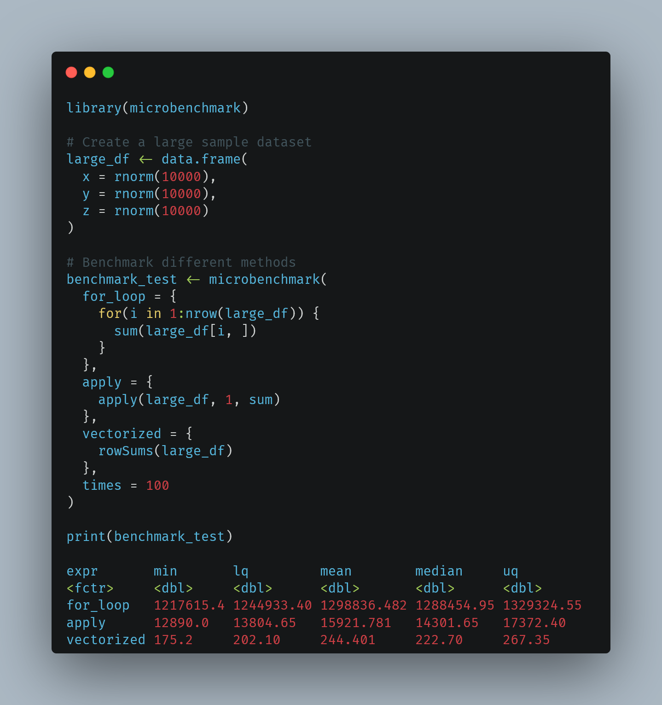
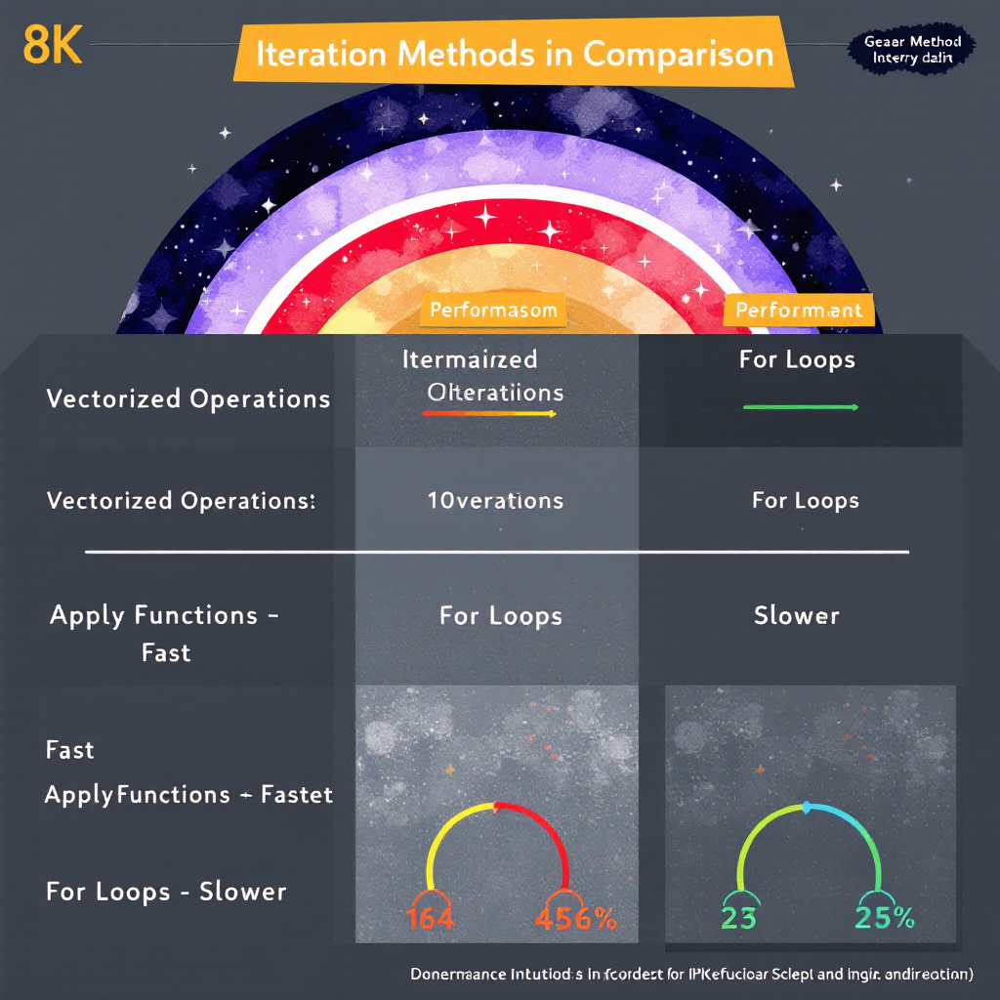

# Creating a simple data frame
df <- data.frame(
name = c("John", "Sarah", "Mike"),
age = c(25, 30, 35),
salary = c(50000, 60000, 75000)
)Introduction
Data frames are the backbone of data analysis in R, and knowing how to efficiently process their rows is a crucial skill for any R programmer. Whether you’re cleaning data, performing calculations, or transforming values, understanding row iteration techniques will significantly enhance your data manipulation capabilities. In this comprehensive guide, we’ll explore various methods to iterate over data frame rows, from basic loops to advanced techniques using modern R packages.
Understanding Data Frames in R
Basic Structure
A data frame in R is a two-dimensional, table-like structure that organizes data into rows and columns. Think of it as a spreadsheet where:
- Each column represents a variable
- Each row represents an observation
- Different columns can contain different data types (numeric, character, factor, etc.)
Accessing Data Frame Elements
Before diving into iteration, let’s review basic data frame access methods:
# Access by position
first_row <- df[1, ]
first_column <- df[, 1]
# Access by name
names_column <- df$nameBasic Methods for Row Iteration
Using For Loops
The most straightforward method is using a for loop:
# Basic for loop iteration
for(i in 1:nrow(df)) {
print(paste("Processing row:", i))
print(df[i, ])
}[1] "Processing row: 1"
name age salary
1 John 25 50000
[1] "Processing row: 2"
name age salary
2 Sarah 30 60000
[1] "Processing row: 3"
name age salary
3 Mike 35 75000While Loops
While less common, while loops can be useful for conditional iteration:
# While loop example
i <- 1
while(i <= nrow(df)) {
if(df$age[i] > 30) {
print(df[i, ])
}
i <- i + 1
} name age salary
3 Mike 35 75000Apply Family Functions
The apply family offers more efficient alternatives:
# Using apply
result <- apply(df, 1, function(row) {
# Process each row
return(sum(as.numeric(row)))
})
# Using lapply with data frame rows
result <- lapply(1:nrow(df), function(i) {
# Process each row
return(df[i, ])
})Advanced Iteration Techniques
Using the purrr Package
The purrr package, part of the tidyverse ecosystem, offers elegant solutions for iteration:
library(purrr)
library(dplyr)
# Using map functions
df %>%
map_df(~{
# Process each element
if(is.numeric(.)) return(. * 2)
return(.)
})# A tibble: 3 × 3
name age salary
<chr> <dbl> <dbl>
1 John 50 100000
2 Sarah 60 120000
3 Mike 70 150000# Row-wise operations with pmap
df %>%
pmap(function(name, age, salary) {
# Custom processing for each row
list(
full_record = paste(name, age, salary, sep=", "),
salary_adjusted = salary * (1 + age/100)
)
})[[1]]
[[1]]$full_record
[1] "John, 25, 50000"
[[1]]$salary_adjusted
[1] 62500
[[2]]
[[2]]$full_record
[1] "Sarah, 30, 60000"
[[2]]$salary_adjusted
[1] 78000
[[3]]
[[3]]$full_record
[1] "Mike, 35, 75000"
[[3]]$salary_adjusted
[1] 101250Tidyverse Approaches
Modern R programming often leverages tidyverse functions for cleaner, more maintainable code:
library(tidyverse)
# Using rowwise operations
df %>%
rowwise() %>%
mutate(
bonus = salary * (age/100), # Simple bonus calculation based on age percentage
total_comp = salary + bonus
) %>%
ungroup()# A tibble: 3 × 5
name age salary bonus total_comp
<chr> <dbl> <dbl> <dbl> <dbl>
1 John 25 50000 12500 62500
2 Sarah 30 60000 18000 78000
3 Mike 35 75000 26250 101250# Using across for multiple columns
df %>%
mutate(across(where(is.numeric), ~. * 1.1)) name age salary
1 John 27.5 55000
2 Sarah 33.0 66000
3 Mike 38.5 82500Best Practices and Common Pitfalls
Memory Management
# Bad practice: Growing objects in a loop
result <- vector()
for(i in 1:nrow(df)) {
result <- c(result, process_row(df[i,])) # Memory inefficient
}
# Good practice: Pre-allocate memory
result <- vector("list", nrow(df))
for(i in 1:nrow(df)) {
result[[i]] <- process_row(df[i,])
}Error Handling
# Robust error handling
safe_process <- function(df) {
tryCatch({
for(i in 1:nrow(df)) {
result <- process_row(df[i,])
if(is.na(result)) warning(paste("NA found in row", i))
}
}, error = function(e) {
message("Error occurred: ", e$message)
return(NULL)
})
}Practical Examples
Example 1: Simple Row Iteration
# Create sample data
sales_data <- data.frame(
product = c("A", "B", "C", "D"),
price = c(10, 20, 15, 25),
quantity = c(100, 50, 75, 30)
)
# Calculate total revenue per product
sales_data$revenue <- apply(sales_data, 1, function(row) {
as.numeric(row["price"]) * as.numeric(row["quantity"])
})
print(sales_data) product price quantity revenue
1 A 10 100 1000
2 B 20 50 1000
3 C 15 75 1125
4 D 25 30 750Example 2: Conditional Processing
# Process rows based on conditions
high_value_sales <- sales_data %>%
rowwise() %>%
filter(revenue > mean(sales_data$revenue)) %>%
mutate(
status = "High Value",
bonus = revenue * 0.02
)
print(high_value_sales)# A tibble: 3 × 6
# Rowwise:
product price quantity revenue status bonus
<chr> <dbl> <dbl> <dbl> <chr> <dbl>
1 A 10 100 1000 High Value 20
2 B 20 50 1000 High Value 20
3 C 15 75 1125 High Value 22.5Example 3: Data Transformation
# Complex transformation example
transformed_data <- sales_data %>%
rowwise() %>%
mutate(
revenue_category = case_when(
revenue < 1000 ~ "Low",
revenue < 2000 ~ "Medium",
TRUE ~ "High"
),
# Replace calculate_performance with actual metrics
efficiency_score = (revenue / (price * quantity)) * 100,
profit_margin = ((revenue - (price * 0.7 * quantity)) / revenue) * 100
) %>%
ungroup()
print(transformed_data)# A tibble: 4 × 7
product price quantity revenue revenue_category efficiency_score profit_margin
<chr> <dbl> <dbl> <dbl> <chr> <dbl> <dbl>
1 A 10 100 1000 Medium 100 30
2 B 20 50 1000 Medium 100 30
3 C 15 75 1125 Medium 100 30
4 D 25 30 750 Low 100 30Your Turn!
Now it’s your time to practice! Here’s a challenge:
Challenge: Create a function that:
- Takes a data frame with sales data
- Calculates monthly growth rates
- Flags significant changes (>10%)
- Returns a summary report
Sample solution:
analyze_sales_growth <- function(sales_df) {
sales_df %>%
arrange(date) %>%
mutate(
growth_rate = (revenue - lag(revenue)) / lag(revenue) * 100,
significant_change = abs(growth_rate) > 10
)
}
# Test your solution with this data:
test_data <- data.frame(
date = seq.Date(from = as.Date("2024-01-01"),
by = "month", length.out = 12),
revenue = c(1000, 1200, 1100, 1400, 1300, 1600,
1500, 1800, 1700, 1900, 2000, 2200)
)
analyze_sales_growth(test_data) date revenue growth_rate significant_change
1 2024-01-01 1000 NA NA
2 2024-02-01 1200 20.000000 TRUE
3 2024-03-01 1100 -8.333333 FALSE
4 2024-04-01 1400 27.272727 TRUE
5 2024-05-01 1300 -7.142857 FALSE
6 2024-06-01 1600 23.076923 TRUE
7 2024-07-01 1500 -6.250000 FALSE
8 2024-08-01 1800 20.000000 TRUE
9 2024-09-01 1700 -5.555556 FALSE
10 2024-10-01 1900 11.764706 TRUE
11 2024-11-01 2000 5.263158 FALSE
12 2024-12-01 2200 10.000000 FALSEQuick Takeaways
- Vectorization First: Always consider vectorized operations before implementing loops
- Memory Efficiency: Pre-allocate memory for large operations
- Modern Approaches: Tidyverse and purrr provide cleaner, more maintainable solutions
- Performance Matters: Choose the right iteration method based on data size and operation complexity
- Error Handling: Implement robust error handling for production code
Performance Considerations
Here’s a comparison of different iteration methods using a benchmark example:
library(microbenchmark)
# Create a large sample dataset
large_df <- data.frame(
x = rnorm(10000),
y = rnorm(10000),
z = rnorm(10000)
)
# Benchmark different methods
benchmark_test <- microbenchmark(
for_loop = {
for(i in 1:nrow(large_df)) {
sum(large_df[i, ])
}
},
apply = {
apply(large_df, 1, sum)
},
vectorized = {
rowSums(large_df)
},
times = 100
)
print(benchmark_test)
Frequently Asked Questions
Q1: Which is the fastest method to iterate over rows in R?
Vectorized operations (like rowSums, colMeans) are typically fastest, followed by apply functions. Traditional for loops are usually slowest. However, the best method depends on your specific use case and data structure.
Q2: Can I modify data frame values during iteration?
Yes, but it’s important to use the proper method. When using dplyr, remember to use mutate() for modifications. With base R, ensure you’re properly assigning values back to the data frame.
Q3: How do I handle errors during iteration?
Use tryCatch() for robust error handling. Here’s an example:
result <- tryCatch({
# Your iteration code here
}, error = function(e) {
message("Error: ", e$message)
return(NULL)
}, warning = function(w) {
message("Warning: ", w$message)
})Q4: Is there a memory-efficient way to iterate over large data frames?
Yes, consider using data.table for large datasets, or process data in chunks using dplyr’s group_by() function. Also, avoid growing vectors inside loops.
Q5: Should I always use apply() instead of for loops?
Not necessarily. While apply() functions are often more elegant, for loops can be more readable and appropriate for simple operations or when you need fine-grained control.
References
R Documentation (2024). “Data Frame Methods.” R Core Team. https://cran.r-project.org/doc/manuals/r-release/R-intro.html#Data-frames
Wickham, H. (2023). “R for Data Science.” O’Reilly Media. https://r4ds.hadley.nz/
Wickham, H. (2024). “Advanced R.” https://adv-r.hadley.nz/
Conclusion
Mastering row iteration in R is essential for efficient data manipulation. While there are multiple approaches available, the key is choosing the right tool for your specific task. Remember these key points: * Vectorize when possible * Use modern tools like tidyverse for cleaner code * Consider performance for large datasets * Implement proper error handling * Test different approaches for your specific use case
Engagement
Found this guide helpful? Share it with your fellow R programmers! Have questions or additional tips? Leave a comment below. Your feedback helps us improve our content!
This completes our comprehensive guide on iterating over rows in R data frames. Remember to bookmark this resource for future reference and practice the examples to strengthen your R programming skills.
Happy Coding! 🚀

You can connect with me at any one of the below:
Telegram Channel here: https://t.me/steveondata
LinkedIn Network here: https://www.linkedin.com/in/spsanderson/
Mastadon Social here: https://mstdn.social/@stevensanderson
RStats Network here: https://rstats.me/@spsanderson
GitHub Network here: https://github.com/spsanderson